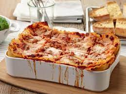

Brenda's Lasagna
This is a faster, and less expensive lasagna.

Prep: 30 mins
Cook: 30 mins
Total: 1 hr
Servings: 8
Yield: 1 9x13 inch pan
Ingredients
- 1 (16 ounce) package lasagna noodles
- 1 pound lean ground beef
- salt and pepper to taste
- 1 (16 ounce) jar spaghetti sauce
- 1 clove garlic, minced
- 1/2 pound shredded mozzarella cheese
- 1 pint ricotta cheese
Instructions
- Bring a large pot of lightly salted water to a boil. Add pasta and cook for 8 to 10 minutes or until al dente; drain.
- In a medium bowl, combine mozzarella, Cheddar and ricotta; stir well. In 9x13 inch pan, alternate layers of noodles, meat mixture and cheese mixture until pan is filled.
- Bake in preheated oven for 30 minutes, or until cheese is melted and bubbly.